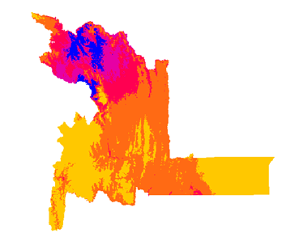

Inicio
El Chagas es una enfermedad parasitaria endémica en América causada por el parásito Trypanosoma Cruzi transmitida por el vector Triatoma infestans (Vinchuca). Aunque la enfermedad se encuentra en toda América, tiene una mayor prevalencia en las regiones rurales de América Latina, esta fue descubierta y descrita en 1909 por el Dr. Carlos Ribeiro Justiniano Das Chagas (1879-1934), médico sanitarista que a principios de siglo se desempeñaba en el Instituto Bacteriológico de Manguinhos (hoy Instituto Oswaldo Cruz) de Río de Janeiro, Brasil.

El principal transmisor de la enfermedad de Chagas en Chuquisaca, Bolivia, es un insecto conocido como vinchuca o chinche besucona (Triatoma infestans)...
Para obtener información sobre la distribución espacial del vector se utilizaron modelos de distribución de especies...
Este insecto, que se alimenta de sangre, deposita sus heces cerca de las picaduras que realiza en la piel de las personas...
La enfermedad es endémica en varias áreas rurales de Bolivia, incluyendo Chuquisaca...

Acerca de
Aquí puedes encontrar información acerca de esta página.
Contacto
Puedes contactarnos a través del siguiente email.